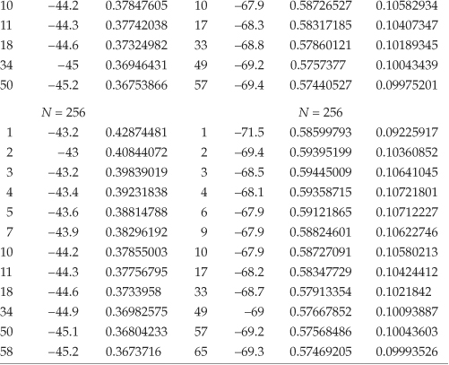

H Frequency Sampling Filter Design Tables
In Section 7.5 we described the so-called Type-IV frequency sampling filter (FSF). The tables in this appendix provide a list of optimum transition coefficient values for the Case I (see Figure 7-44) Type-IV lowpass FSFs of various passband bandwidths, over a range of values of N. Table H-1 provides the H(k) single transition coefficient and two transition coefficients for even values of N. Table H-2 provides the H(k) three transition coefficients for even N. Table H-3 provides the H(k) single transition coefficient and two transition coefficients for odd values of N, while Table H-4 provides the H(k) three transition coefficients for odd N.
Table H-1 Lowpass Type-IV FSF for Even N (One and Two Coefficients)


Table H-2 Lowpass Type-IV FSF for Odd N (One and Two Coefficients)
Table H-3 Lowpass Type-IV FSF for Even N (Three Coefficients)
Table H-4 Lowpass Type-IV FSF for Odd N (Three Coefficients)

The passband bandwidth in these tables, signified by the BW parameter, is the number of FSF sections having unity-valued H(k) gain factors. For example, an N = 32 lowpass FSF using six passband sections and a single transition region coefficient (T1) would have the H(k) gain values shown in Figure H-1(a). In this case, the T1 coefficient would be found in Table H-1 for N = 32 at a bandwidth BW = 6. An N = 23 lowpass FSF with five passband sections and two transition region coefficients (T1 and T2) would have the H(k) gain values shown in Figure H-1(b). In this case, the T1 and T2 coefficients are found in Table H-2 for N = 23 at a bandwidth BW = 5. An additional parameter in the tables is the maximum stopband sidelobe attenuation levels (Atten).
Figure H-1 Transition coefficient examples: (a) one coefficient for N = 32 and BW = 6; (b) two coefficients for N = 23 and BW = 5.